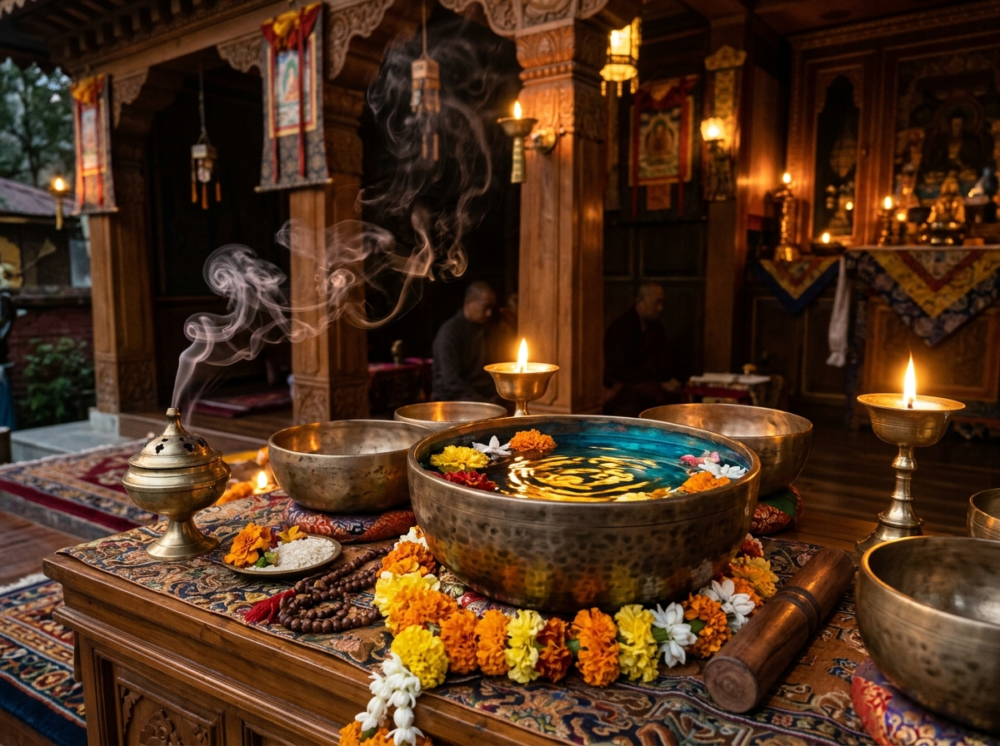

Awaken Inner Harmony & Divine Chakra Radiance
Welcome to Sukoonsay, a serene sanctuary devoted to restorative energy, ancient 7 Chakras alignment, and profound spiritual tranquility. Breathe deeply, shed worldly stress, and reconnect with your eternal divine light.
7 Centers
Pranic Chakra Portals
528 Hz
Heart Solfeggio Harmonics
100% Pure
Serene Sacred Sanctuary
Sanctum Darshan & Ritual Schedule
Experience real-time spiritual rituals, chanting sessions, and peaceful darshan throughout the day.
Mangala Aarti & Sunrise Dhyan
05:30 AM – 07:30 AM
Dawn awakening ceremony, conch blowing, and grounding Root Chakra mantra chanting.
Silent Chakra Dhyanam
08:00 AM – 04:00 PM
Open hall for private contemplation, silent japa meditation, and healing energy absorption.
Sandhya Deepam & Maha Aarti
06:00 PM – 07:30 PM
Evening brass lamp illuminations, camphor flames, floral offerings, and musical hymns.
Tibetan Singing Bowl Sound Bath
08:00 PM – 09:30 PM
432 Hz and 528 Hz harmonic gong immersion to release fatigue and induce deep restorative sleep.
Explore The 7 Sacred Chakras
In Vedic tradition, the 7 Chakras are radiant vortices of spiritual life force (Prana). Select any chakra below to reveal its sacred frequency, seed mantra, crystal remedy, and resonant sound.
The Sacred 4-7-8 Pranayama Calmer
Scientifically proven clinical breathwork to lower cortisol, calm the racing amygdala, and invoke deep psychological stillness in under 3 minutes.
Inhale Calm
Breathe in slowly through the nose into your deep abdomen. Feel sacred oxygen rejuvenating your nervous system.
Hold & Anchor
Hold your breath gently without strain. Allow oxygen to oxygenate your bloodstream and quiet mental chatter.
Exhale & Release
Exhale completely through your mouth with a soft whoosh sound. Release every ounce of built-up tension.
Sanctuary Offerings & Energy Alignment
Holistic spiritual treatments designed to cleanse your aura, dissolve stress knots, and restore radiant vitality.
Chakra Alignment & Aura Cleansing
Gentle hands-on and crystal therapy to unblock congested energy centers. Restores harmonious flow across all 7 chakras using pure amethyst, quartz, and sacred aromatherapy.

Himalayan Singing Bowl Sound Bath
Bathe in resonant bronze Tibetan bowl frequencies, rain sticks, and gongs that wash over every cell. Transmutes nervous system exhaustion into profound meditative theta stillness.
Kundalini Breathwork & Mantra Sadhana
Guided master classes in Anulom Vilom, Bhastrika, and Vedic bija mantra chanting. Awaken your dormant spinal energy and expand cognitive peace and emotional resilience.
Discover Your Blocked Chakra
Take this quick 3-question self-assessment to identify which energy center needs gentle restoration and love today.
Sacred Links & Wisdom Portals
Explore authentic portals for Vedic philosophy, sacred chants, live darshans, and spiritual mindfulness.
Vedic Chants & Suktas
Authentic Audio ArchiveListen to traditional Sanskrit recitations of the Gayatri Mantra, Mahamrityunjaya, and Purusha Suktam for spiritual elevation.
Bhagavad Gita Verse By Verse
Timeless Spiritual PhilosophyImmerse yourself in chapter translations on Karma Yoga, Bhakti Yoga, and Raja Yoga with philosophical commentaries.
Live Temple Aarti & Darshan
Continuous Live FeedsConnect your heart to sacred temple sanctums, live morning aartis, and evening lamp rituals from holy shrines worldwide.
Chakra Guided Meditations
Insight Sanctuary LibraryAccess guided sound baths, breathwork practices, and 432 Hz Solfeggio tracks to support your daily home sadhana.
Sanctum Address & Spiritual Connect
Whether you seek personal chakra guidance, wish to submit a prayer sankalpa, or desire to visit our serene sanctum, reach out through the sacred portal below.
Sukoonsay Sanctum
Sacred Spiritual SanctuaryNestled amidst serene natural tranquility, our doors are open to truth seekers, meditators, and all who yearn for deep inner stillness.
Rishikesh - Varanasi Holy Spiritual Corridor, India
Send Your Sacred Message
Fill in your email and address details below. Our sanctum acharyas will respond with peaceful blessings.